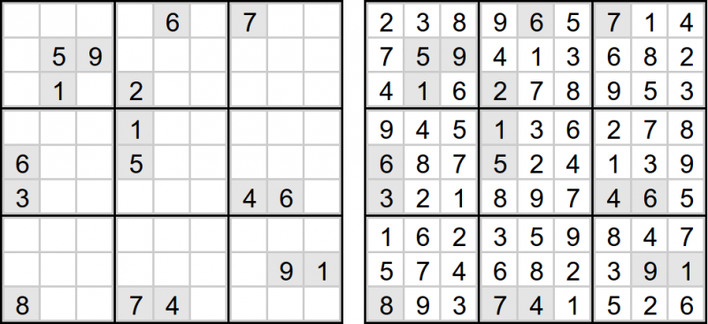

Python vs C++: Алгоритм решения судоку
06.07.2015
11:21
C++, Python, Алгоритм, Рекурсия, Судоку
Введение
На самом деле, сначала я просто для эксперимента реализовал алгоритм решения Судоку на языке Python, чтобы оценить его лаконичность и эффективность. И, честно сказать, получилось не совсем то, на что я рассчитывал по обоим направлениям. Конечно, был взят наиболее простой алгоритм, который можно придумать. И это могло сказаться на производительности. Однако на сверхбыструю работу от некомпилируемого языка программирования рассчитывать и не стоило. Но что с лаконичностью? В Python предусмотрено довольно много конструкций, которые способны существенно сократить количество кода, по сравнению с реализациями на других языках программирования. Поэтому я решил, что имеет смысл попробовать написать то же самое еще раз, но уже на C++, и провести то сравнение, о котором и пойдет речь.
Алгоритм решения судоку
Не будем слишком усложнять себе работу и пойдем наиболее простым путем. В качестве задачи ограничимся классическим Судоку 9x9. Правила головоломки довольно просты:
Вот пример задачи Судоку и решения для него:

Алгоритм построим следующим образом:
Вход: Поле головоломки Судоку, часть клеток которого заполнена;
Выход: Полностью заполненное поле или пустое поле, если решения нет;
Начало
Пока возможно:
Для каждой клетки проверяем выполнение условий на уникальность в ряду, столбце и блоке:
Если для какой-то клетки подходящей цифры не нашлось, то завершаем работу алгоритма (решения нет);
Если существует единственная подходящая цифра, то заполняем клетку соответствующим образом;
Если все клетки заполнены, то завершаем цикл и возвращаем найденное решение;
Иначе если ни одну клетку за проход заполнить не удалось, то завершаем цикл;
Для клетки с минимальным количеством вариантов:
Пробуем ставить каждую цифру по порядку и рекурсивно решать получившиеся Судоку;
Если решение было найдено, то возвращаем его;
Конец.
Представленная логика достаточно проста и понятна. Сначала мы пытаемся заполнить клетки, для которых все однозначно. Для этого мы используем ограничения на уникальность по рядам, столбцам и блокам. Если Судоку некорректное, то на какой-то из итераций выявится клетка, для которой вообще нет допустимых вариантов. В этом случае дальше нам делать нечего.
Для наиболее простых Судоку на этом алгоритм можно было бы и закончить. Решение бы уже нашлось. Но для более сложных не так все легко. В них появятся клетки, для которых нет однозначных вариантов. Поэтому нам приходится работать с вероятностями. Конечно, есть достаточно сложные алгоритмы, которые бы существенно могли сократить перебор, но они также сложнее в реализации. Поэтому мы используем метод грубой силы.
Но чтобы не делать лишних действий, мы выбираем для перебора такие клетки, у которых количество возможных вариантов оказывается наименьшим. А затем устанавливаем каждый из этих вариантов и пробуем решать то Судоку, которое получится, тем же самым алгоритмом рекурсивно. Если предположение было сделано неверно, то на каком-то из шагов рекурсии найдется клетка, у которой не будет возможных решений, после чего мы перейдем к другому варианту. И так будем пробовать до тех пор, пока все не сойдется.
Такой алгоритм нельзя назвать оптимальным, но он гарантировано найдет решение головоломки, если оно есть. Если решений несколько, то он вернет первое возможное, хотя мы могли бы не ограничивать перебор и попробовать найти все возможные решения. Вообще, этот алгоритм разработан в духе языков логического программирования. Возможно, когда-нибудь я добавлю вариант его реализации на Prolog.
Реализация алгоритма решения судоку на Python
И вот что получилось у меня на Python:
import copy
import time
class SudokuSolver:
def solve( puzzle ):
solution = copy.deepcopy( puzzle )
if SudokuSolver.solveHelper( solution ):
return solution
return None
def solveHelper( solution ):
minPossibleValueCountCell = None
while True:
minPossibleValueCountCell = None
for rowIndex in range( 9 ):
for columnIndex in range( 9 ):
if solution[ rowIndex ][ columnIndex ] != 0:
continue
possibleValues = SudokuSolver.findPossibleValues( rowIndex, columnIndex, solution )
possibleValueCount = len( possibleValues )
if possibleValueCount == 0:
return False
if possibleValueCount == 1:
solution[ rowIndex ][ columnIndex ] = possibleValues.pop()
if not minPossibleValueCountCell or \
possibleValueCount < len( minPossibleValueCountCell[ 1 ] ):
minPossibleValueCountCell = ( ( rowIndex, columnIndex ), possibleValues )
if not minPossibleValueCountCell:
return True
elif 1 < len( minPossibleValueCountCell[ 1 ] ):
break
r, c = minPossibleValueCountCell[ 0 ]
for v in minPossibleValueCountCell[ 1 ]:
solutionCopy = copy.deepcopy( solution )
solutionCopy[ r ][ c ] = v
if SudokuSolver.solveHelper( solutionCopy ):
for r in range( 9 ):
for c in range( 9 ):
solution[ r ][ c ] = solutionCopy[ r ][ c ]
return True
return False
def findPossibleValues( rowIndex, columnIndex, puzzle ):
values = { v for v in range( 1, 10 ) }
values -= SudokuSolver.getRowValues( rowIndex, puzzle )
values -= SudokuSolver.getColumnValues( columnIndex, puzzle )
values -= SudokuSolver.getBlockValues( rowIndex, columnIndex, puzzle )
return values
def getRowValues( rowIndex, puzzle ):
return set( puzzle[ rowIndex ][ : ] )
def getColumnValues( columnIndex, puzzle ):
return { puzzle[ r ][ columnIndex ] for r in range( 9 ) }
def getBlockValues( rowIndex, columnIndex, puzzle ):
blockRowStart = 3 * ( rowIndex // 3 )
blockColumnStart = 3 * ( columnIndex // 3 )
return {
puzzle[ blockRowStart + r ][ blockColumnStart + c ]
for r in range( 3 )
for c in range( 3 )
}
def printPuzzle( puzzle ):
for row in puzzle:
print( row )
puzzle = [
[ 0, 0, 0, 0, 6, 0, 7, 0, 0 ],
[ 0, 5, 9, 0, 0, 0, 0, 0, 0 ],
[ 0, 1, 0, 2, 0, 0, 0, 0, 0 ],
[ 0, 0, 0, 1, 0, 0, 0, 0, 0 ],
[ 6, 0, 0, 5, 0, 0, 0, 0, 0 ],
[ 3, 0, 0, 0, 0, 0, 4, 6, 0 ],
[ 0, 0, 0, 0, 0, 0, 0, 0, 0 ],
[ 0, 0, 0, 0, 0, 0, 0, 9, 1 ],
[ 8, 0, 0, 7, 4, 0, 0, 0, 0 ]
]
printPuzzle( puzzle )
print()
startTime = time.clock()
solution = SudokuSolver.solve( puzzle )
if solution: printPuzzle( solution )
print()
print( time.clock() - startTime, "sec" )
Думаю, что в представленной реализации вы не увидели ничего удивительного. Она полностью соответствует нашей первоначальной задумке. Единственное, на что следует обратить внимание, - алгоритм разбит на две функции. Главную solve() и вспомогательную solveHelper(). Однако первая из них сама практически ничего не делает, и вся реализация заключена во второй. Хотя пользоваться предлагается именно ей. Но это тоже довольно стандартный прием написания рекурсивных функций, который всем известен.
Для проверки условий на уникальность мы написали четыре вспомогательные функции findPossibleValues(), getRowValues(), getColumnValues() и getBlockValues(). Последние три просто возвращают множество цифр, которые уже стоят в ряду, столбце и блоке. А первая на основе полученных множеств возвращает цифры, которые остались и могут стоять в клетке на заданной позиции.
Незанятые клетки для простоты мы заполнили нулями. Вероятно, более правильным решением было бы использование None, но, как вы могли заметить, код написан без лишних изысков. Например, в нем присутствуют "волшебные числа", от которых в реальном приложении нужно было бы избавиться в первую очередь.
Реализация алгоритма решения судоку на C++
Практически то же, что мы получили на Python, можно написать и на C++:
#include <iostream>
#include <QVector>
#include <QSet>
#include <QTime>
typedef QVector< QVector< int > > Puzzle;
typedef QSet< int > Values;
class SudokuSolver {
public:
static Puzzle solve( const Puzzle& puzzle ) {
Puzzle solution = puzzle;
if( solveHelper( &solution ) ) {
return solution;
}
return Puzzle();
}
static bool solveHelper( Puzzle* solution ) {
int minRow = -1;
int minColumn = -1;
Values minValues;
forever {
minRow = -1;
for( int rowIndex = 0; rowIndex < 9; ++rowIndex ) {
for( int columnIndex = 0; columnIndex < 9; ++columnIndex ) {
if( ( *solution )[ rowIndex ][ columnIndex ] != 0 ) {
continue;
}
Values possibleValues = findPossibleValues( rowIndex, columnIndex, *solution );
int possibleVaueCount = possibleValues.count();
if( possibleVaueCount == 0 ) {
return false;
}
if( possibleVaueCount == 1 ) {
( *solution )[ rowIndex ][ columnIndex ] = *possibleValues.begin();
}
if( minRow < 0 || possibleVaueCount < minValues.count() ) {
minRow = rowIndex;
minColumn = columnIndex;
minValues = possibleValues;
}
}
}
if( minRow == -1 ) {
return true;
} else if( 1 < minValues.count() ) {
break;
}
}
for( auto v : minValues ) {
Puzzle solutionCopy = *solution;
solutionCopy[ minRow ][ minColumn ] = v;
if( solveHelper( &solutionCopy ) ) {
*solution = solutionCopy;
return true;
}
}
return false;
}
static Values findPossibleValues( int rowIndex, int columnIndex, const Puzzle& puzzle ) {
Values values;
for( int i = 1; i < 10; ++i ) {
values << i;
}
values -= getRowValues( rowIndex, puzzle );
values -= getColumnValues( columnIndex, puzzle );
values -= getBlockValues( rowIndex, columnIndex, puzzle );
return values;
}
static Values getRowValues( int rowIndex, const Puzzle& puzzle ) {
return Values::fromList( puzzle[ rowIndex ].toList() );
}
static Values getColumnValues( int columnIndex, const Puzzle& puzzle ) {
Values values;
for( int r = 0; r < 9; ++r ) {
values << puzzle[ r ][ columnIndex ];
}
return values;
}
static Values getBlockValues( int rowIndex, int columnIndex, const Puzzle& puzzle ) {
Values values;
int blockRowStart = 3 * ( rowIndex / 3 );
int blockColumnStart = 3 * ( columnIndex / 3 );
for( int r = 0; r < 3; ++r ) {
for( int c = 0; c < 3; ++c ) {
values << puzzle[ blockRowStart + r ][ blockColumnStart + c ];
}
}
return values;
}
};
void printPuzzle( const Puzzle& puzzle ) {
for( auto row : puzzle ) {
for( auto v : row ) {
std::cout << v << " ";
}
std::cout << std::endl;
}
}
int main() {
Puzzle puzzle = {
{ 0, 0, 0, 0, 6, 0, 7, 0, 0 },
{ 0, 5, 9, 0, 0, 0, 0, 0, 0 },
{ 0, 1, 0, 2, 0, 0, 0, 0, 0 },
{ 0, 0, 0, 1, 0, 0, 0, 0, 0 },
{ 6, 0, 0, 5, 0, 0, 0, 0, 0 },
{ 3, 0, 0, 0, 0, 0, 4, 6, 0 },
{ 0, 0, 0, 0, 0, 0, 0, 0, 0 },
{ 0, 0, 0, 0, 0, 0, 0, 9, 1 },
{ 8, 0, 0, 7, 4, 0, 0, 0, 0 }
};
printPuzzle( puzzle );
std::cout << std::endl;
QTime time;
time.start();
Puzzle solution = SudokuSolver::solve( puzzle );
if( !solution.isEmpty() ) printPuzzle( solution );
std::cout << std::endl;
std::cout << time.elapsed() / 1000.0 << " sec" << std::endl;
return 0;
}
Для краткости здесь использовано несколько конструкций, которые появились в C++11, но код увеличился бы не так уж сильно, если бы мы обошлись без них. Кроме того, мы задействовали классы коллекций из Qt, но они также не особо влияют на реализацию и лишь обеспечивают более естественную форму записи.
А теперь сравним две этих версии.
Python vs C++: сравнение реализаций
Во введение я уже говорил, что сравнивать реализации алгоритма мы будем по двум характеристикам: лаконичность и производительность. Начнем с первого пункта.
Лаконичность
Я бы не сказал. что среди двух представленных реализаций есть явный лидер. Версия на Python оказалась немного короче из-за того, что отсутствует необходимость ставить закрывающиеся фигурные скобки }, как на С++. Но я не могу отнести это к явным преимуществам. Однако в целом Python проявил себя более гибким языком программирования, каким он и является. Удобными мне представляются его итераторы и генераторы, а также мощная функциональность для работы со списками и кортежами. Конечно, С++11 приближается по выразительности к Python, но все же не может ее достигнуть из-за ограничений статической типизации.
Единственная особенность алгоритма, которую на C++ получить оказалось легче, - копирование поля Судоку перед входом в рекурсию. В Python нам приходится явно использовать deepCopy(), чтобы получить именно копию, а не просто еще одну ссылку на поле головоломки. А перед возвратом результата, который вернул рекурсивный вызов, на Python и вовсе приходится копировать значения в цикле. На C++ все это за нас делает QVector, что не только упрощает реализацию, но и может сократить расход памяти.
Таким образом, хоть реализации алгоритмов получились практически идентичными, я отдаю предпочтению Python за его синтаксис. Но и C++ оправдывает свое название и имеет пару своих плюсов.
Производительность
Будем честными. Никто не ждет, что версия на Python будет работать быстрее, чем на C++. Или же произойдет чудо? Какова разница? Я думаю, вы обратили внимание, что в обоих реализациях вставлен код для замера времени выполнения. Мой компьютер выдает следующие цифры: 2.77 secна Python и 0.76 sec на C++. Итого, версия на C++ работает более, чем в три с половиной раза быстрее.
Не думаю, что это такой уж плохой результат для Python. Но стоит признать, что с учетом плюсов и минусов, вариант на C++ выглядит более предпочтительным для той версии алгоритма, которую мы рассмотрели. Вероятно, более сложный алгоритм, который существенно снижает число переборов, не будет так чувствителен к скорости работы. Но оказалась бы его реализация на Python проще, чем на C++? Скорее всего, да.
Заключение
В этой заметке мы рассмотрели две реализации одного и того же алгоритма для решения головоломки Судоку на Python и C++. Затем мы сравнили их по двум характеристикам: лаконичность и производительность. В результате оказалось, что хоть версия на Python немного проще, чем на C++, но существенно уступает ей в скорости работы. Однако следует учитывать, что у C++ была фора, поскольку алгоритм основывается на рекурсивном переборе, где у Python не было шансов. В более сложной версии алгоритма ситуация, скорее всего, сложится уже в пользу Python, так как в ней на первое место выйдет вопрос простоты кода, а не скорости перебора.